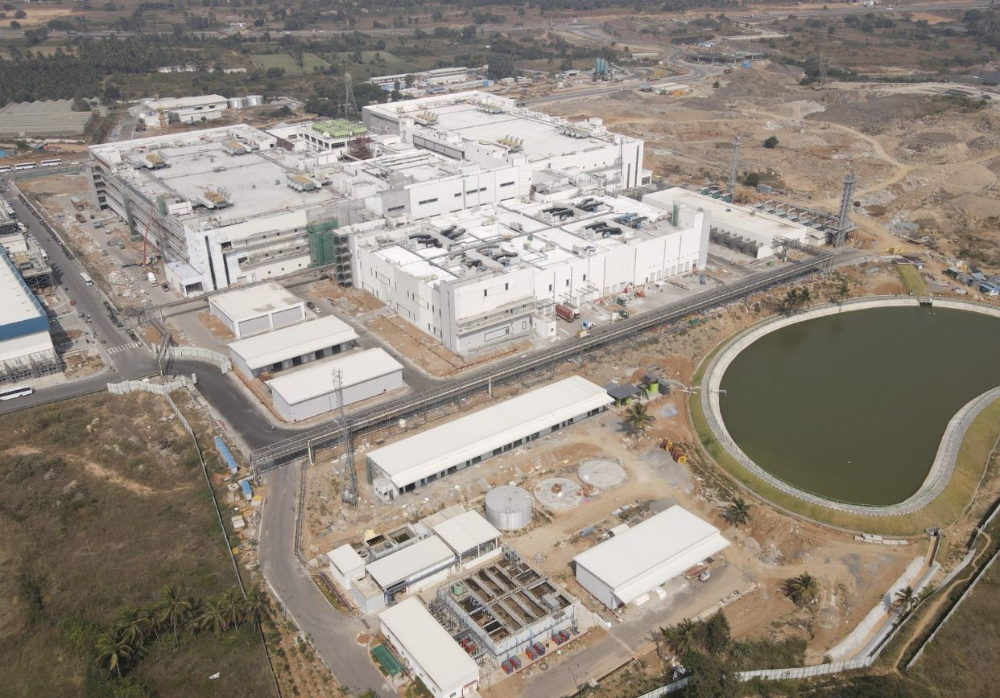

How sustainability is shaping the future of civil construction.
Sustainability in civil construction is no longer just about following guidelines—it’s about making thoughtful decisions that balance performance, responsibility, and long-term value. As the construction industry continues to shape modern cities and infrastructure, responsible building has become essential to creating spaces that serve both people and the planet.
1. Introduction to Sustainable Civil Construction
Sustainability in civil construction is no longer just about following guidelines—it’s about making thoughtful choices that benefit people, the planet, and the projects we build. As the construction industry shapes the spaces where we live and work, building responsibly has become both a necessity and an opportunity.
The Tangible Benefits Sustainable construction practices help reduce energy and water consumption, lower long-term operating costs, and minimize material waste. Smart designs, efficient systems, and eco-friendly materials not only save money over a building’s life cycle but also improve overall project efficiency and asset value.
The Intangible Benefits Beyond numbers and materials, sustainability creates a positive impact that lasts. It reduces environmental harm, lowers carbon emissions, and helps preserve natural resources for future generations. It also strengthens a company’s reputation—clients, partners, and communities increasingly trust and prefer builders who act responsibly. Most importantly, sustainable buildings offer healthier, more comfortable spaces for people.
At its core, sustainable civil construction is about building with purpose creating infrastructure that performs well today while caring for tomorrow.
2. Why Sustainability Matters in Today’s Construction Industry
- Rising Resource Demand The construction industry is one of the largest consumers of energy, water, and raw materials. Sustainable practices help optimize resource usage, reduce dependency on non-renewable materials, and ensure responsible consumption as urban development continues to grow.
- Environmental Responsibility Construction activities contribute substantially to carbon emissions and environmental degradation. Sustainable construction reduces emissions, minimizes waste, and protects natural ecosystems, supporting global and local environmental goals.
- Changing Client & Regulatory Expectations Governments, investors, and clients increasingly demand environmentally responsible projects. Sustainability improves compliance, enhances brand credibility, and builds trust with stakeholders who value transparency and long-term impact.

3. Building with Purpose: A Long-Term Vision
Building sustainably means thinking beyond immediate project delivery. Smart designs, efficient systems, and eco-friendly materials contribute to structures that are more resilient, adaptable, and cost-effective over time. Purpose-driven construction improves asset value, enhances user comfort, and ensures infrastructure remains relevant and functional for years to come. Sustainability, in this sense, becomes a strategic investment in longevity and performance.
4. The Future of Sustainability in Civil Construction
As technology and innovation continue to evolve, sustainability will play an even greater role in shaping the future of civil construction. From energy-efficient designs and advanced construction methods to data-driven planning and green materials, the industry is moving toward smarter, more responsible building solutions. Organizations that embed sustainability into their processes today will lead the way in creating healthier cities and stronger communities tomorrow.
Sustainable construction is not just about building structures, it’s also about building a better future for generations to come.